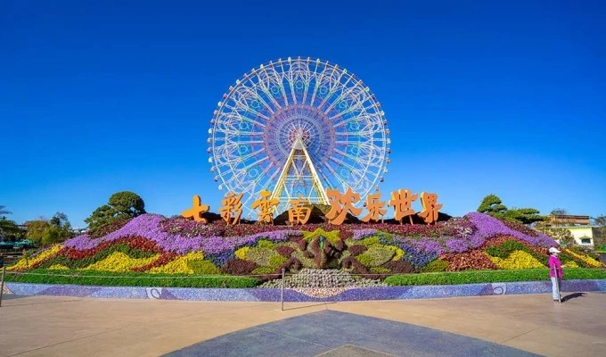
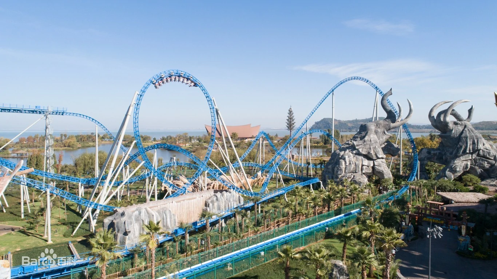

你了解七彩云南吗?
“七彩云南·欢乐世界”由云南省著名企业——昆明诺仕达集团倾情打造，作为“七彩云南·古滇名城”康养旅游度假区的核心部分，
乐园总投资30亿元，占地面积600余亩，紧扣“古滇文化”、“民族文化”、“地域文化”三大文化脉络，
以独特新颖的方式规划出七大主题分区：滇军营地、幻滇奇域、童梦世界、万象部落、洪荒秘境、霜月寒洲、四季花海，
并为孩子们打造了娱乐中心——宝贝乐园。
园区设有81个游乐项目，各式游乐设备，包括瑞士B&M公司、德国MACK公司、美国S&S公司等游乐设备公司为乐园提供了
包括雪鹰宽翼过山车、象戏游龙过山车、双塔太空梭等超大型设备，园区做到了特色文化与现代科技的融合。
为了向八方宾客展示云南的好山好水、民族风情，园区内独具匠心的打造了飞翔影院——
《飞越彩云南》、水秀——《孔雀公主》、多媒体互动、室内民族歌舞剧场、室外特技剧场、花车巡游（古滇大巡游）等众多特色文化项目。

童梦世界:
童梦世界主题园区是以民族建筑与植物元素设计的，适合低龄段儿童游玩。来到童梦世界，
可以在旋转木马与转转杯上享受欢乐时光，可以在奇趣电竞城、飓风飞椅和四面青蛙跳里感受速度带来的欢乐，
也可以在亚马逊丛林探险、高空拓展冒险与森林世界活动中，收获冒险的快乐。
四季花海:
四季花海主题乐园区四季鲜花盛开，在这里可以乘坐滇池之眼摩天轮和七彩专列，
可以看到定时开启的音乐喷泉，还可以观看花车巡游。
幻滇奇域:
幻滇奇域是勇敢者的试炼场之一，在这里可以搭乘水上转转杯、幻滇金牛、飞翔影院、虎跳峡、激流勇进游乐项目。
滇军营地:
滇军营地里以滇军战象、象戏游龙过山车、高空飞翔、迷炫激光、幻镜迷阵几个项目为主，
让游客们可以充分地感受“上天入地”的心跳和刺激。
万象部落:
万象部落里除了可以体验到万象矿山车、太阳风车、波浪翻滚等项目带来的欢乐之外，
还能到民族剧院观看特色表演，让您在流连忘返之余，收获知识获得快乐。
霜月寒洲:
在霜月寒洲，可以感受雪鹰宽翼过山车、冰雪战车、音乐快车、情侣飞车带来的刺激感，
在几分钟的时间里上下数百米，体验肾上腺素飙升的快感。
洪荒秘境:
洪荒秘境拥有洪荒石锤、孔雀翎、太阳船、双塔太空梭、旋转弹跳、丛林水战、雨林探险等项目，惊险刺激中走近神秘古滇。